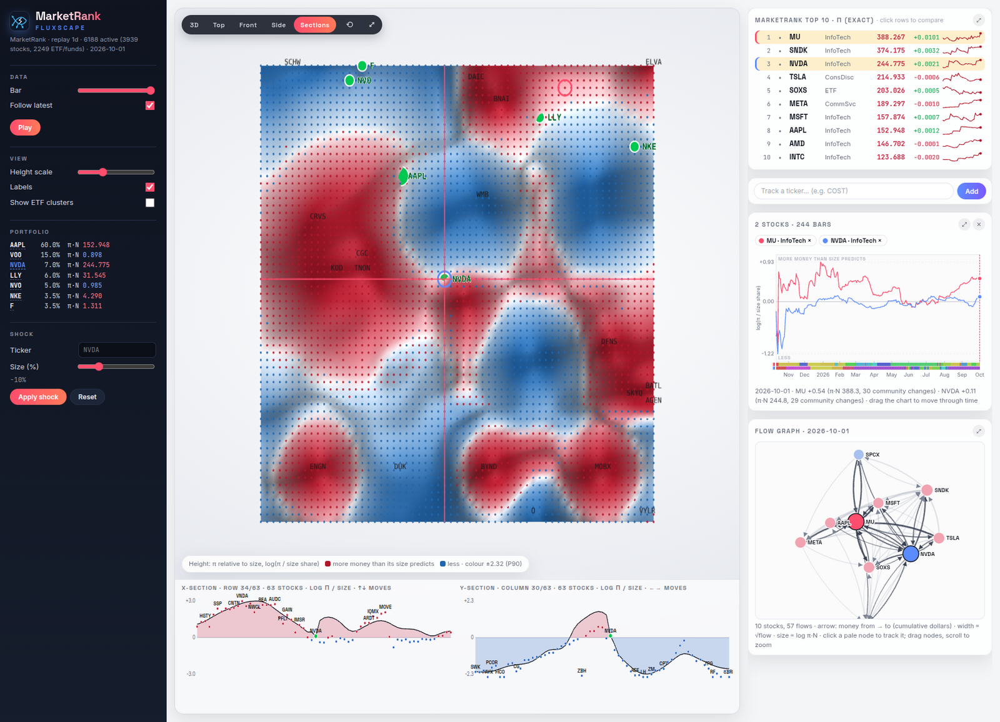

Graph AI LLC
We build scalable graph analytics: parallel graph and Markov-chain solvers, spatio-temporal and network analysis, link prediction, and interactive views that make the structure of large connected systems readable.
Many problems are really about relationships: who connects to whom, how something flows through a network, and where it settles. We turn those relationships into graphs and solve them at scale.
Deterministic, parallel solvers for ranking, stationary distributions, shortest paths and centrality on graphs with millions of edges, with bit-identical results on any core count.
Geospatial and time-aware graph analytics: movement, routing and multimodal transport networks, and how they change over time.
Knowledge-graph construction, link prediction and community detection to surface hidden connections across datasets, with explainable outputs.
Graph structure turned into views people can reason about: landscapes, sections, paths and local graph close-ups, always next to the exact numbers.
C++ and Python engines with full test suites, pre-registered evaluations and honest reporting of what works and what does not.
APIs and data pipelines (Parquet, DuckDB, graph databases) so the analytics run where your data already lives.
Where does the market's money settle? MarketRank treats stocks as the states of a Markov chain whose transition probabilities are the estimated stock-to-stock money flows, and ranks each stock by its long-run (stationary) probability. PageRank is the best-known instance of the same idea, with links instead of dollars.
